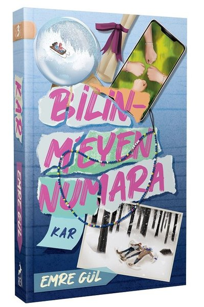

Yıldızlara sığınıp, sonsuzluğa yemin ettiğimiz o büyülü gecenin sahibiydi ilkbahar…
Ve sonsuzluğumuza gölge düşüren, karanlık günlerimizin sahibi yaz...
Bir sonbahar günüydü yaşananları ardımızda bırakıp her şeye rağmen sıkı sıkı sarıldığımızda…
Ve ellerimizi ayırmak isteyen kim varsa, onlara karşı var gücümüzle savaşmaya karar verdiğimiz günlerin sahibiydi kış…
Hedefine ulaşmak adına, karşısına çıkan tüm engelleri ortadan kaldırmak için gözünü iyice karartan mesajcı, akıl almaz oyunlarıyla istediğini elde edene kadar sınırları zorlamaya hazırdır. Kusursuz işleyen oyunlarıyla bir labirent misali ikilinin etrafını kuşatmıştır. Ancak Çınar ve Balın'ın her şeye karşı çareyi yine birbirlerine sığınmakta bulmaları mesajcının hiç hoşuna gitmeyecektir.
İkili, hayatlarını bambaşka bir noktaya taşıyan mesajların ardındaki kişiyi öğrendiğinde ne yapacaktır?
Mesajcıyla tanışmak onlar için hiç kolay olmayacaktır…
"Masalımız defalarca yabancılar tarafından yırtıldı fakat
hiçbiri sarıldığımız sayfalara dokunmaya cesaret edemedi."